Timely vaccine strain selection and genomic surveillance improves evolutionary forecast accuracy of seasonal influenza A/H3N2
John Huddleston, PhD
Bedford Lab
Fred Hutchinson Cancer Center
September 30, 2024
Seasonal influenza vaccines remain the best protection against hospitalization and death

Photo: WHO / Tom Pietrasik
Vaccine strain selection requires a prediction of what will circulate 12 months in the future
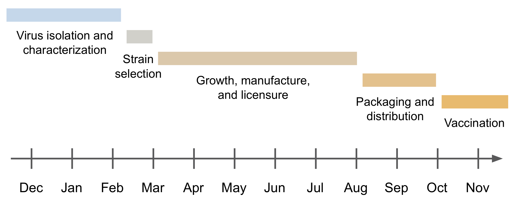
After Trevor Bedford and Morris et al. 2018
Vaccine strain selection requires a prediction of what will circulate 12 months in the future
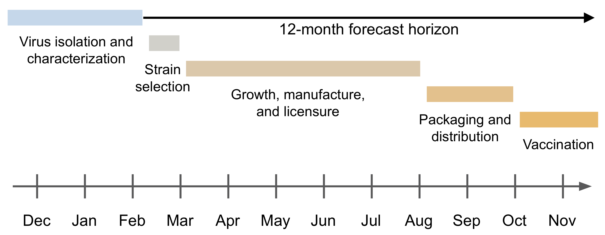
After Trevor Bedford and Morris et al. 2018
The Global Influenza Surveillance and Response System tracks influenza year-round
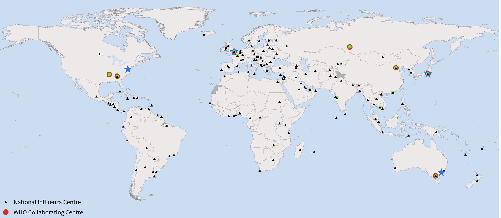
Vaccine strain selection depends on the current genetic diversity of hemagglutinin
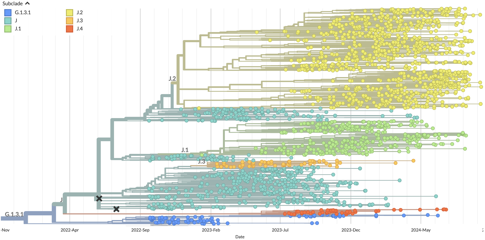
Forecasting models predict future populations by projecting forward current populations

Forecasting models predict future populations by projecting forward current populations

Forecasting models predict future populations by projecting forward current populations

Models minimize genetic distance between predicted and observed future populations
Models also produce clade frequency forecasts

Differences between predicted and observed clade frequencies reflect model accuracy

Earth mover's distance accounts for frequency and genetic distance between populations

Rubner et al. 1998
Accurate forecasts minimize earth mover's distance between populations

We originally trained models in sliding windows through historical H3N2 data

The prepandemic lag between sample collection and sequence submission averaged ~3 months
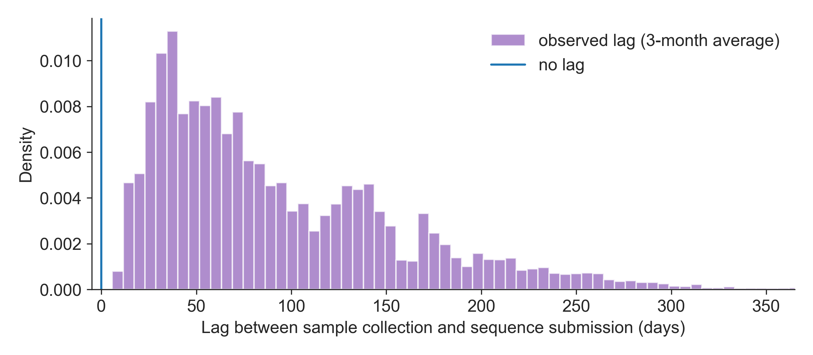
The SARS-CoV-2 pandemic showed realistic changes that we could achieve for influenza
- SARS-CoV-2 vaccine strain selection happens 3-6 months before vaccines become available
- Pandemic-era funding and capacity for surveillance reduced sequence submission lags to a ~1 month average
How much could we improve our forecasts by reducing the forecast horizon?
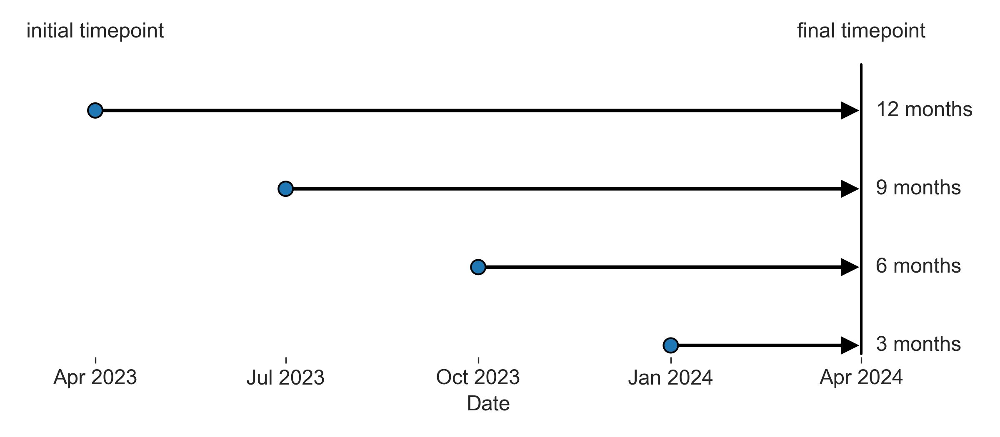
How does sequence submission lag affect forecast accuracy?
How does sequence submission lag affect forecast accuracy?
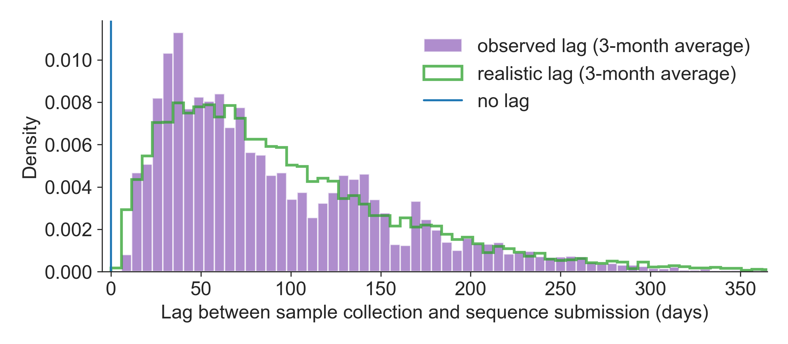
How much could we improve forecasts by reducing sequence submission lags?
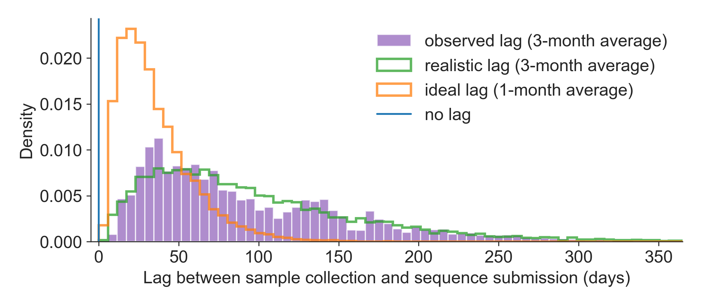
We tested forecasts for each combination of forecast horizon and submission lag
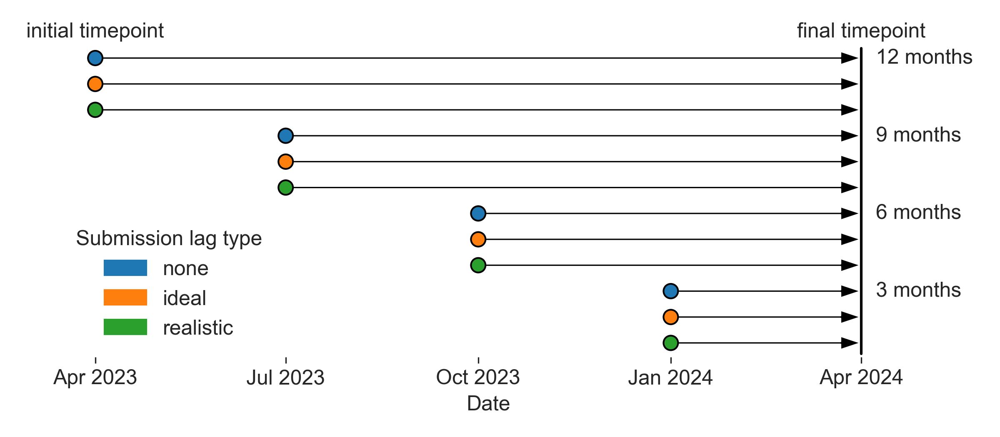
Reducing submission lags improves estimates of current clade frequencies
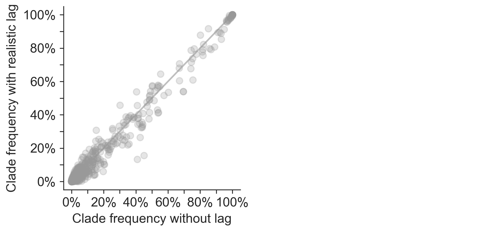
Reducing submission lags improves estimates of current clade frequencies
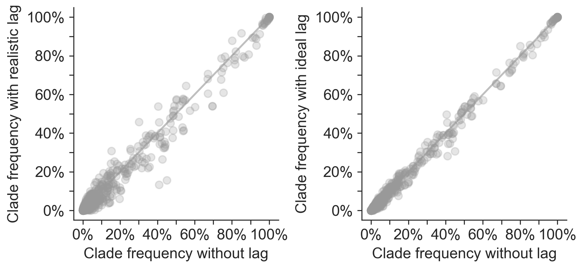
Reducing submission lags improves estimates of current clade frequencies
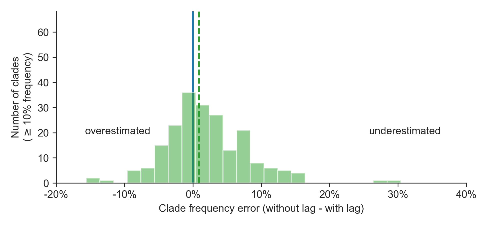
Reducing submission lags improves estimates of current clade frequencies
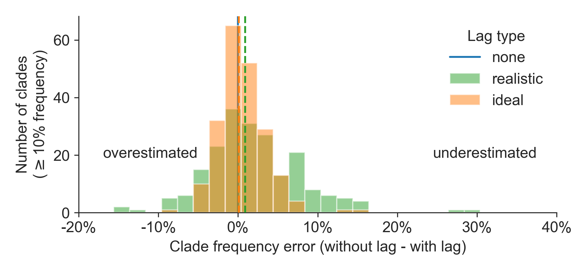
Reducing forecast horizons increases accuracy and precision of clade frequency forecasts
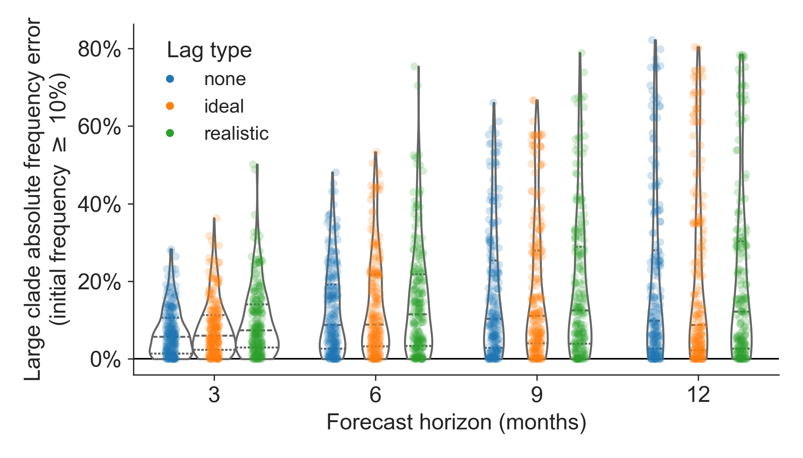
Reducing lags decreases distances between predicted and observed future populations
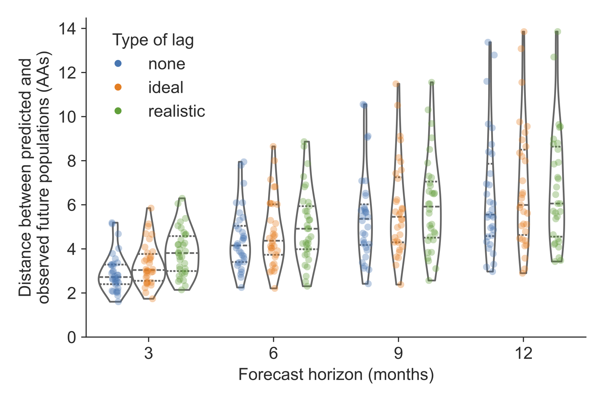
Faster vaccine selection is the most effective realistic intervention

Faster vaccine and surveillance perform best with a perfect forecast
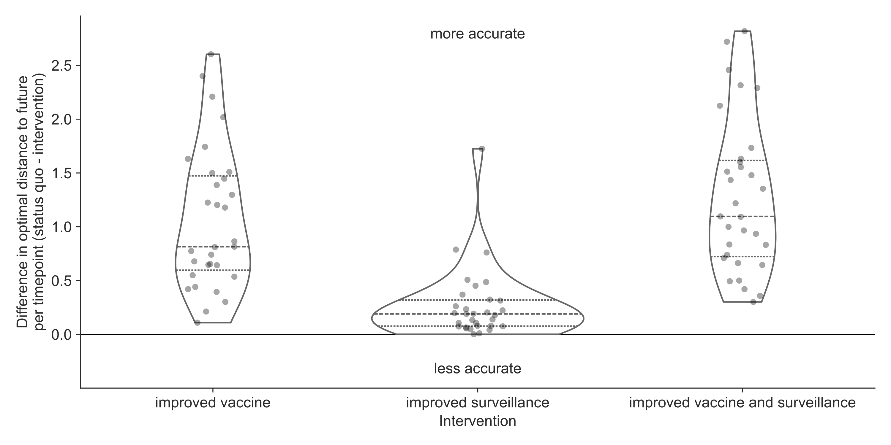
Conclusions
- Faster vaccine development improves our predictions of the future.
- Faster genomic surveillance improves our understanding of the present.
Pandemic-era submission lag
shows signs of improvement

Thank you!
|
Fred Hutch Cancer Center
Data Sources
|
Funding
|
Continue the conversation
By email at jhuddles@fredhutch.org